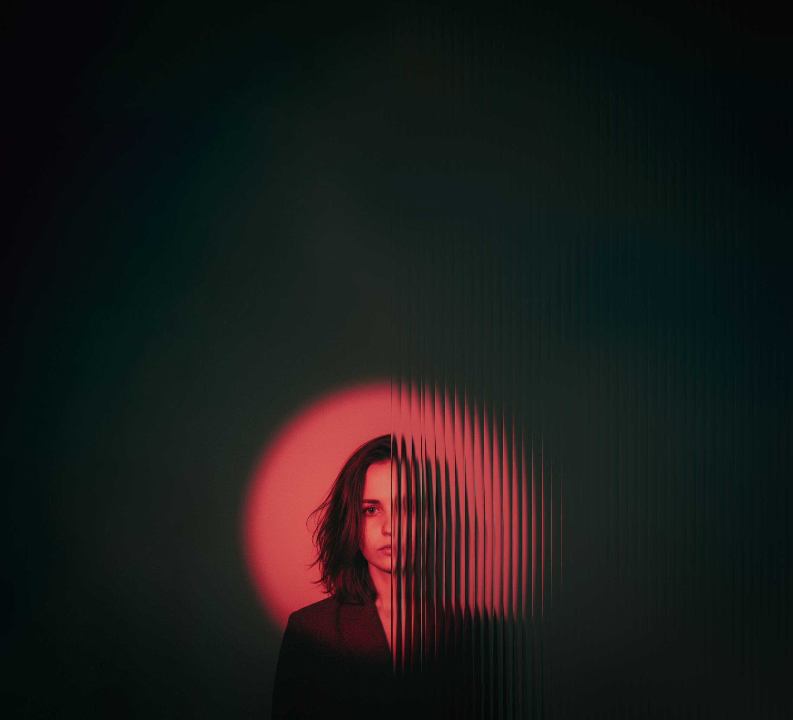
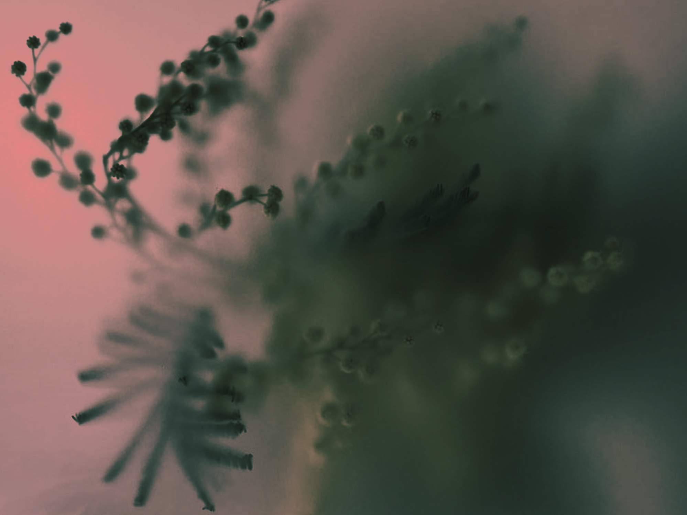
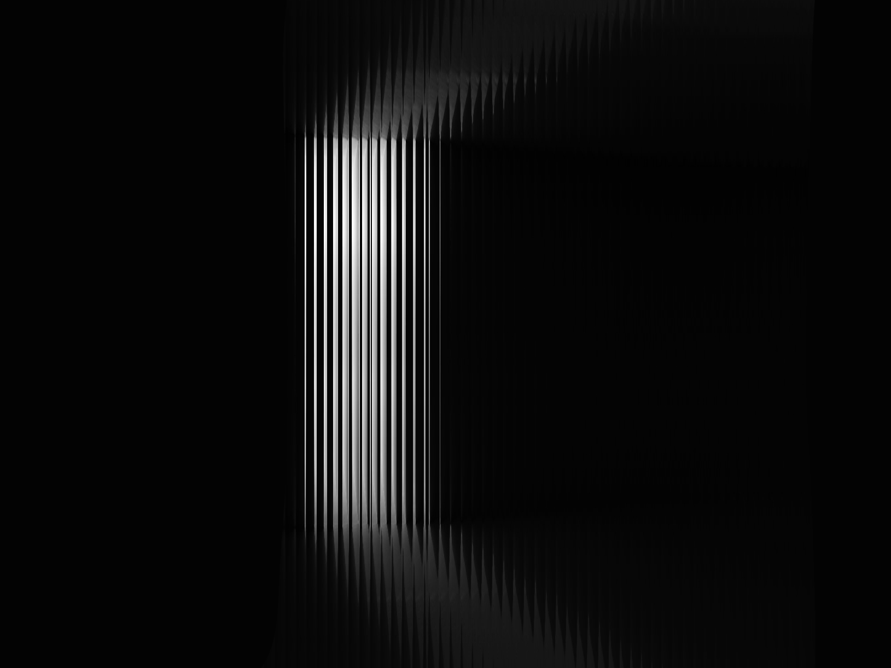
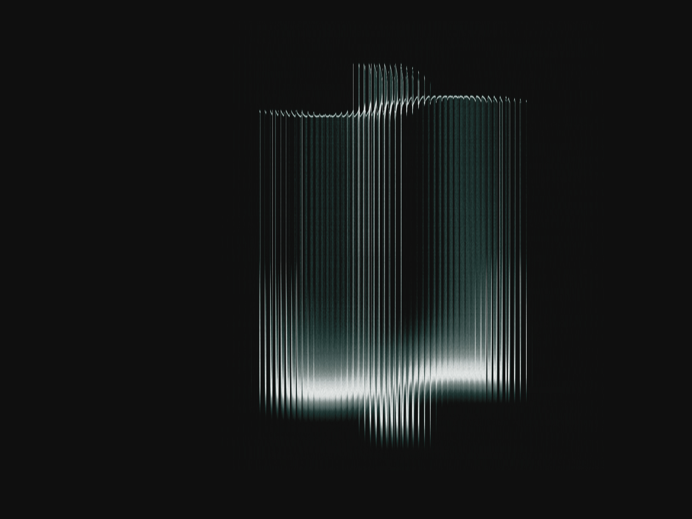
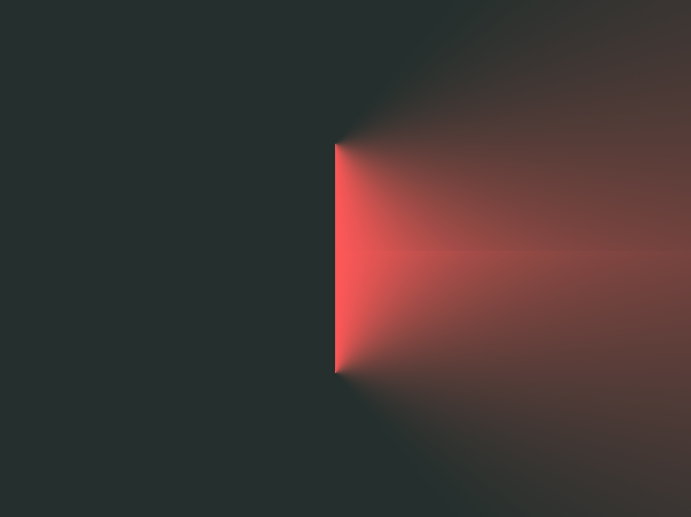

человек, который с детства хотел стать русалкой или ведьмой, а стал...психологом. Практикую с 2021 г. Регулярно прохожу курсы повышения квалификации, посещаю супервизионные группы. Нахожусь в личной терапии. В работе использую интегративный подход в зависимости от запроса, но отдаю предпочтение юнгианско-ориентированной терапии. Работаю с запросами личных кризисов, проблем в личных отношениях, нестабильной самооценки, комплексов. Вы всегда можете написать мне по теме своего запроса, и я расскажу работаю ли я с Вашей темой или подскажу проверенного специалиста. Люблю мемы и фотографии котиков.
ОмГПУ, 2021 г.
МИП, 2025 г.
МИП, 2025 г.
МИП, 2025 - по н.вр.
МААП, 2025 - по н.вр.
На своих ресурсах я регулярно пишу статьи о глубинной психологии, бессознательном и интересных техниках, которые вы можете попробовать уже прямо сейчас

Индивидуальная работа с психологом по вашему запросу или без него. Помогает понять, что с вами происходит, почему это так и постепенно изменить это, чтобы улучшить качество вашей жизни.

Индивидуальный анализ Вашего сновидения. Помогает расшифровать и осознать импульсы бессознательного для дальнейших изменений в жизни.

Методика свободных ассоциаций в текстовом формате. Помогает понять, почему вы так реагируете в конкретной ситуации, и наметить, что с этим можно делать дальше без включения в терапию.

Разовая сессия эмоциональной разгрузки. Когда накопилось и хочется выговориться без разбора "почему вы такие". Помогает снять напряжение и не тащить это дальше в себе.
Пишете мне в Telegram. Мы кратко обсуждаем запрос и подбираем удобное время.
Для закрепления времени за вами требуется полная предоплата первой сессии.
Встречаемся в назначенное время онлайн в Zoom (для видеосессий) или в удобном для Вас мессенджере (для аудиоформата). Продолжительность сессии 50-60 минут.
Инсайты, облегчение и конкретные шаги для дальнейшей работы над собой.
Количество сессий обговаривается индивидуально. При принятии решения о завершении терапии обязательно проводится заключительная сессия для подведения итогов работы.
Специальной подготовки не требуется. На каждую сессию желательно иметь под рукой тетрадь (лист бумаги) и ручку – для записи инсайтов, а также стакан воды. О дополнительных инструментах (цветные карандаши, бОльшее количество бумаги) сообщаю заранее перед сессией.
На данный момент я не специализируюсь на групповой (семейной терапии), но могу порекомендовать Вам соответствующих специалистов.
Все, что вы приносите на сессию – остается только на сессии, за исключением полученной информации, которая может нанести вред Вам и окружающим. В случае, если случай не входит в пределы моей компетенции – я предложу Вам обратиться к соответствующим специалистам.
В случае если я работаю с Вами, то не имею права быть психотерапевтом для близких Вам людей (муж/сестра/подруга), т.к. это может повлиять на оба процесса терапии.
В случае продолжительной терапии переносы/отмена сессии производится не менее, чем за 24 часа до назначенной даты. В случае более поздней отмены – сессия оплачивается, но не производится. В случае «форсмажорной» отмены со стороны терапевта менее, чем за 24 часа – сессия переносится, а также следующая сессия будет бесплатной.
Пишите для записи на консультацию или по любым другим вопросам!